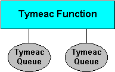
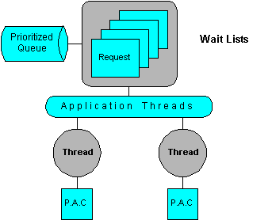

Developing your System
This section details the elements necessary for developing Tymeac Systems in your installation.
It's really very simple. It's the first time through here that's a little confusing.
Tymeac development comprises four elements:
- The Processing Application Class that executes the application code.
- The Queue in which the Processing Application Class resides.
- The Function in which the Queue resides.
- The Client that calls the Tymeac Server.
... and four related subjects:
- System Wide Variables
- Testing.
- The user exit structure.
- The overall structure.
A Tymeac Function is a list of Tymeac Queues.

A Tymeac Queue contains a list of waiting requests, called Wait Lists, the Threads of execution that make Tymeac a multi-threading container and the Processing Application Class that contains the user code.

A Processing Application Class is the code you write to process the specifics of the application. A Tymeac Queue Thread uses reflection to invoke the main() method of your class.
This is the decoupling that is so important in good application design. Multi-threading is very difficult since not only does the developer have to write the application logic, the developer also has to write the threading logic (wait(), notify(), synchronize() etc.)
You supply the application logic in a Processing Application Class. Tymeac handles the threading logic.
Processing Application Class (or base Class)
If this is your first time through here, we suggest you take a quick tour of this material without all the detail.
Tymeac utilizes two types of applications:
- A normal application
This application receives input from a Client and may return an object.
The returned object may pass back to the calling Client or, when an asynchronous request, the returned object may be passed on to an Output Agent application.
- An Output Agent application
This optional application receives the returned object(s) from the normal application(s) for asynchronous requests.
That is just so confusing, but wait, examples are forthcoming.
Your Processing Application Class (base Class) must have a public static main() method that accepts an Object array.
public static Object main(Object[] args) {}
public static void main(Object[] args) {} (has no returned data)The Queue Thread uses a java.lang.reflect.Method invoke() for your base Class passing an Object array (Object args[]) ):
- The first Object (arg[0]) is either
- the optional input data from the Tymeac Client contained in the Tymeac parameter,
Normal Processing ApplicationClass, or
- an Object array when this is an Output Agent Processing Application Class. The Object array is the array of all the return Objects from the normal Processing Application Classes. (See here.)
- The second Object (arg[1]) is a reference (TymeacInterface) to the Tymeac Server. You may use this reference for recursion processing or pass it along to another Class.
For examples see the Demo Classes we supply in the sample directory. A snippet of the code is presented in the following documents.
Demo1.java -- is a normal Processing Application Class. It receives input data from a Tymeac Client.
DemoAgent1.java -- is an Output Agent Processing Application Class. It receives an Object array of the return Objects of the normal Processing Application Classes.
DemoRecur.java -- is an example of recursion processing. It uses the second argument (arg[1]) to call the Tymeac Server.
The main() method Return Type may be an Object, void, another class or primitive. Tymeac passes the return value back to the Synchronous Request in an Object array or on to the Output Agent in an Object array. Therefore, it is up to the receiving module to interpret this Object. (For maximum flexibility, we recommend using a return type of Object and casting any return class to Object, or, wrapping a primitive in an object and casting it to Object.)
The first object in the returned Object array is the result of Tymeac Processing.
This is a String.
For a Synchronous Request:
Tymeac SR(0000)
- Tymeac is the prefix.
- SR stands for Synchronous Request.
- (nnnn) Return code, should be 0000. When the number in parentheses is not zero, then check the return code document for the failure reason.
The other objects in the returned Object array are the result of YOUR processing. YOUR objects may be any object that implements the interface serializable. When only using the Internal Server, you may pass non-serializable classes.
For an Asynchronous Request there is only one String object in the returned Object array:
Tymeac AR(0000)[session id, request id]
- Tymeac is the prefix.
- AR stands for Asynchronous Request.
- (nnnn) Return code, should be 0000. When the number in parentheses is not zero, then check the return code document for the failure reason.
- The data in brackets are:
- Session Id -- The System time in milliseconds since 1970. MilliTime also appears on the start up and shut down messages It is the way to identify this session of Tymeac. When you wish to inquire about the status of an asynchronous request, this Id is necessary, see the Request Status Class.
- Request Id -- A unique number assigned to every request starting at one (1). When you wish to inquire about the status or to cancel an asynchronous request, this Id is necessary, see the Request Status Class.
Parsing the above Objects can be tedious and prone to error. Therefore, we have a class that extracts necessary information from those Objects and puts it into this class for easy reference. This is the TymeacReturn class. Several demonstration classes use this class. See for example: com.tymeac.demo.TyDemoInternal
For a Shut down Request there is one String:
Tymeac SD(0000)
- Tymeac is the prefix.
- SD stands for Shut Down.
- (nnnn) Return code, should be 0000. When the number in parentheses is not zero, then check the return code document for the reason.
The public is so that Tymeac may find your base Class. The static is so that no instance of your base Class is necessary, eliminating constructors (called a Class Method).
Since this main() is static other method references by code in main() must also be static. However, there is no restriction on new instances of other Classes (composition). his means that the main() method can be a base for the rest of your functionality including loading other Classes, using a transport mechanism (like RMI or CORBA) or Servlets.
The Queue Thread invokes your base Class with a:
Object return_data = ...invoke()...The Output Agent Queue Thread invokes your Class with an:
...invoke()... ( no return value specified.)
Additional Subjects:
- Canceling a working request
- Testing Aids
- Access
- Security
- Exceptions
- Re-loading Classes
- Long Running Threads
- Compiling
- Sharing Conflicts
- Server Information
- The Singleton
- Shut Down
Yes, it is possible, see here.
Testing multi-threading systems is not for the faint of heart. We have a document on testing aids. Included in document is a section on using the diagnoseRequest(). This method is not documented anywhere else.
Tymeac needs access to your Processing Application Class therefore, Tymeac must be able to load that class into the Java Virtual Machine. Two option are available:
- Using the Java Class Path:
Tymeac uses a custom Class Loader with the method, findSystemClass(), for your base Class. The base Class is the Class you define in the Tymeac Queue. Therefore, your base Class must be a local Class (on the CLASSPATH, -cp or codebase).
- Using URL's:
Tymeac uses a URLClassLoader with the list of URL's specified along with the class name. See the class naming and URL document for details of how to specify a URL list.Tymeac handles Security Exceptions in that it sets all Queue Threads as unavailable for requests (status: disabled). Therefore, you must address all security issues before starting Tymeac Server.
The Tymeac Queue Thread invokes your base Class in a "try" block. Exceptions for this reflect.Method are caught, including "Throwable". Errors are caught using an UnCaughtExceptionHandler.
Tymeac processes a caught exception by logging a message, sending a notification, and disabling the thread. If this is the action you wish to take, then re-throw the exception. See also the return codes for Queue Threads.
When should you rethrow the exception? Anytime the situation requires manual intervention, that is, it's broken beyond what error recovery code can handle. An example is a corrupt file or database, a programming error or any critical resource that is not available.
Once you rethrow the exception, the thread is marked "disabled". Once all threads are "disabled" the Queue is no longer functional. The Tymeac Monitor sends a notification when all threads are disabled.
If the exception was due to a programming error, then you may fix the logic, recompile the module, use the New Copy GUI to get a new copy of the Class and enable the Queue Threads with the enable button on the Queue Threads Display/Alter GUI.
If you can fix the problem without taking down the Server then you may enable the Queue Threads as above.
During testing it is common that the base Class you develop may need adjusting. It is not necessary to shut down and restart Tymeac every time a change is necessary. The Tymeac Class, TyNewCopy, is available to re-load the base class or load an alternate base Class during execution.
N.B. -- Classes already loaded by the Virtual Machine through a classpath cannot be unloaded (at this time.) Therefore, if you need changes to the base class, then you must use a URL to load the class. This also holds true for any classes your base class loads. See the class naming and URL document.
Long running processes pose a potential problem.
Tymeac is a process NOW system. The structure is to accept a work request, process that request as quickly as possible and fetch the next request. There is no facility within Tymeac to process the request at a later time. However, there are numerous middleware, message-queuing systems on the market. The scope of these systems is that one sends a message (this could be the parameters for Tymeac) to a message queue with instructions to deliver the message to another message queue at a later time.
Tymeac keeps track of the time the Queue Thread is executing within the reflection invoked base class and may flag the Queue Thread as possibly stalled. The result of this is that the Queue Thread's status becomes 'cancelled' or 'disabled'. When all Queue Threads within a Queue have either of these status codes, the Queue cannot accept any more requests (Scheduling failure).
If the processing is just slow, then the potential for a problem is small.
However, if this is truly a long running process, then one may use the Queue timeout value to increase the time Tymeac allows the reflection invoked code to execute before flagging it as possibly stalled. You may also alter this value dynamically with the QueData Class.
This flagging has no affect on the executing Processing Application Class. It simply changes the Queue Thread's status code. If the Processing Application Class finishes processing, the Queue Thread resets the status code.
The Tymeac Classes (TymeacInterface, TymeacParm, etc.) are in package com.tymeac.base, in the directory, <TymeacHome>/Classes. Import the package com.tymeac.base in the user classes that require access to the Tymeac Classes and include the proper directory for the compiler.
Where to put the compiled code is another concern.
One of the primary reasons for multi-threading systems to fail is the problem of threads stepping on each other. If you're new to multi-threading, you'll never believe it affects you -- you can get away without synchronizing shared variables etc. Try it and weep.
Since your Processing Application Class runs as a Java Thread, there may be many threads of execution running at the same time. If your Class uses objects that are shared by this Class, then you need to protect the integrity of these objects.
Java provides four ways for preserving integrity on shared objects. These are:
the synchronized modifier on the method definition
public synchronized void yourMethod() {}and the synchronized statement
synchronized (object) {}the java.util.concurrent.locks package
the java.util.concurrent.atomic package.
Using the 'volatile' keyword does not preserve variable integrity. It does however force the compiler to generate code that fetches the current state of the variable from memory for each thread access and immediately writes the variable to memory for each thread modify.
What this means is that if you have one thread that writes a variable and multiple threads that read a variable, the reads will get the current value. (This did not work properly before Java 1.5) If you have multiple threads that write a variable, forgetaboutit. Use one of the above four methods.
When locking spans multiple methods, then the second or third way is preferable. However, confusion sometimes arises over how one may get a reference to a shared object (the (object) in the synchronized statement.)
The simplest way is to lock on a Class object (e.g. synchronized (MyClass.class) {}).
Another is to use a Singleton Class (i.e. There are numerous examples of this technique in the Sun archives, developerWorks.com and JavaWorld.com.)
One common way is to use a public Class with static fields. See the User Exit structure, below.
Not only does "synchronized/Lock()" lock out other threads, it reads/writes the thread's variables from/to main memory.
In Java, main memory is where all variables live. (See the Java Memory Model, Chapter 17 of the Java Language Specification) Each thread has a copy of the variables it uses (registers, caches etc). When a thread writes a value to a variable, it is the thread's copy of the variable that gets modified. Eventually, Java writes the value to main memory.
Therefore, if another thread looks at a variable, it may see the value of the main memory variable before Java updates the main memory.
The solution is to synchronize, use Lock or atomic.
However, one must remember that Tymeac controls the threads -- instantiation, termination, waiting, notifying, etc. Although you may pass a thread-object reference (java.lang.Thread.currentThread() ) to a private product, there is a potential for conflict if that product uses methods that affect thread control.
- Tymeac may believe a stall condition is present in the Processing Application Class when that application waits for an excessive amount of time.
- When using the Queue Thread alteration GUI or the New Copy GUI, one may purge threads that have a reference stored in a private Vector. Although Tymeac believes the thread is gone, the thread may resume execution and results are unpredictable.
- Since only Tymeac controls the threads, private techniques for flushing, resetting and restarting threads in private resources are not available.
Tymeac maintains information about the currently executing Tymeac Server. This information is available to any Processing Application Class or User Exit. See TymeacInfo.
Tymeac maintains a user singleton class into which you may put any objects for use by your runtime classes.
ShutDown (See also the shutdown document.)
There are two implementation methods for shut down:
public String shutRequest(); -- This is the old version and is the same as the second with a boolean false.
public String shutRequest(boolean kill); -- This version supports forcing termination in the case when there are unresponsive Queue Threads. For all normal shut down requests, you should set the boolean to false or simply use version 1. If normal shutdown cannot progress and you need the Server down quickly, then set the boolean to true.
Queues
A Queue constructs with the Queue Maintenance Class, TyQueMaint, when using a Data Base Management System, or you may use the User Classes
All three parts of a Queue work together; Threads, Wait Lists, and your Processing Application Class.
After you write the Processing Application Class, above, you define the environment in which it is to execute, the Queue.
The client request goes into a Queue's Wait List. A Queue Thread picks up the request, invokes your Processing Application Class, saves the return Object from your Class and repeats that cycle until there are no more requests.
For a Synchronous Request, the array of return Objects is passed back to the client.
For an Asynchronous Request, the array of return Objects may go into an Output Agent Queue's Wait List. An Agent Queue Thread picks up the request, invokes your Processing Application Class and repeats that cycle until there are no more requests.
How many threads in the Queue and the number of Wait Lists are determined by processing requirements. The Queue Maintenance Class, TyQueMaint, discusses these.
Functions
A Function constructs with the Function Maintenance Class, TyFuncMaint, when using a Data Base Management System, or, you may use the User Classes
Function naming guidelines are here.
After you define the Queue, above, the component part of a request, you set up the way by which Queues tie together, the Function.
The client requests a Function. The Function contains Queues. Each Queue contains your Processing Application Class.
Each Function has one or more Queues associated with it. For example, refer to the Tymeac Demonstration System:
Class, Demo1, is a Processing Application Class.
Queue, AAAA, is a Queue that uses Demo1.
Function, Function_2, is a Function that uses Queue AAAA.Class, Demo2, is a Processing Application Class.
Queue, BBBB, is a Queue that uses Demo2.
Function, Function_3, is a Function that uses Queues AAAA and BBBB.Tymeac supports two types of requests: Synchronous and Asynchronous.
A Synchronous Request schedules the Queues in the Function, waits until all Queue's finish processing and returns the "return Objects" of all the Processing Application Classes to the client in an array.
An Asynchronous Request schedules the Queues in the Function and returns control to the client.
As part of an Asynchronous Request, it is often useful to do something with the "return Objects" of all the Processing Application Classes. This is the purpose of the Output Agent Queue.
As part of the definition of a Function is the option of an Output Agent Queue. When the last Queue Thread finishes processing the request (the order of which is irrelevant):
- it builds an array of all the of the "return Objects" of all the Queues in the Function that is latter passed to the Processing Application Class as the first Object (arg[0])
- it schedules the Output Agent Queue.
For an overview of Tymeac processing, with drawings, see the Tymeac Overview.
Tymeac Client
The client access to the Tymeac Server is with the parameter the client passes to the Tymeac Server and the communication code.
The parameter is Class TymeacParm. The input Object (passed to all Processing Application Classes), is optional.
The communication code is the variable. We supply a framework Class, TySvrComm. However, you may develop any Class you wish. Processing before and after this class is purely application oriented.
// passed object for the P.A.C.
Object pass = any object you need
// form a parameter for Tymeac
TymeacParm TP = new TymeacParm(
pass, // input data
"YourFunc", // function name
10, // wait time in seconds
1); // priority
// do a sync request
Object back[] = new TySvrComm().syncRequest(TP);We supply several demonstration classes that are Tymeac Clients: [prefix com.tymeac.demo..]
- DemoClientBase -- base from which other classes inherit.
- DemoClient_1 - _8
- TyDemoT1, TyDemoT3
- DemoRecur -- This is the recursion example. It is a Processing Application Class that also becomes a client.
Identification
There may be times when your Processing Application Class, executing in the Tymeac Server, needs to know the identification of the Tymeac Client requesting the service Outside of CallBack.Although there is an rmi Server method, getClientHost(), this method generally is unacceptable and Tymeac Server does not use this method.
- The method only returns the TCP EndPoint address of the host on which the client resides, not the actual client identification and this method is only available to pure Java (not RMI-IIOP or other plug-in) implementations.
- Using a physical address to identify a client is usually not a good idea. The network may change, machines come and go. This is "hard wiring". When the location changes, then an administrator must alter all tables. Using a "soft wiring" method means the client can take its identification with it when it moves.
Secondly, the RMI Runtime keeps track of the identification of Clients that have unmarshalled this Server's RemoteObject. (This has to do with the Distributed Garbage Collector.) However, API access to this data is not available.
Therefore, it is the responsibility of the Client to include a unique identifier for use by the Processing Application Class within the input Object it passes to the Tymeac Server. This coding is totally dependent on each application.
Idle Period
There may be times when you would like to know when no Tymeac Clients exist. (See the SDK documentation /guide/rmi/spec/rmi/ (Garbage Collection of Remote Objects.) This involves implementing the Unreferenced Interface (one method, Unreferenced()) in the Tymeac Server.
- The unreferenced() method is only called when ALL clients no longer hold a reference to the remote object or when the lease time expires (java.rmi.dgc.leaseValue.)
- The Registries (RMI/JNDI) are clients. When Tymeac Server registers with one of these, then the unreferenced() method may never be called.
- Since this is the purview of the Distributed Garbage Collector, each operating system may implement this differently.
We do not implement the Unreferenced Interface.
For the activatable Tymeac Server, we keep track of the idle period, that is - the time when no Client has called the Server. (see Configuration File Maintenance and User Variables Class) When this idle period reaches a threshold, the application may take some action (such as deactivating, etc.) In this way, we are not dependent on any implementations of DGC and we have much more flexibility.
System Variables
Tymeac reads system variables at start up from the TymeacUserVariables class for stand alone mode or the Tymeac Configuration File for DBMS start up. This is where you put the monitor interval, etc.
Testing
Becoming familiar with how Tymeac works is preliminary in any testing environment. We provide a page on how to alter the Demonstration System Classes and a page on abnormal conditions that may arise.
The easiest way to test a Class is without the Tymeac threading environment. We supply a source Class, DemoTesting.java. This Class:
- loads the required Class, Class.forName("name of the Class to load"),
- finds the method signature, "main(Object[])", and
- invokes the found "main" method.
This is similar to the way Tymeac invokes your Processing Application Class. Therefore, if it runs here, it should run there.
Two directories are necessary to use this Class:
- <home>\com\tymeac\serveruser -- for the Processing Application Class
- <home>\com\tymeac\demo -- for the DemoTesting Class.
Having tested the Class in a stand-alone environment, it is time to test the Class in the Tymeac threading environment.
Testing a Class usually requires setting up a Queue and a Function just for testing.
It is easier to test a single Class when there is only one Queue in the Function. It is easier to isolate threads when there is only one thread in the Queue. Therefore, define a Queue, TyQueMaint, with one (1) thread and the name of your Processing Application Class. Define a Function, TyFuncMaint, with the name of this single Queue.
Write a Tymeac Client Class that passes the input Object to the Tymeac Server as a Synchronous Request, TymeacParm, with a time out value high enough to allow stepping through the application.
- Start the RMI Registry.
- Start TymeacServer.
- Set a trap for your application.
- Run the application.
See also the section on naming threads found in the Maintenance Class for Queues and in the section on Thread Names.
This same process works for the Output Agent Processing Application Class.
Just set up a normal Queue and pass simulated data to this application, with a Synchronous Request, as it would be if from other applications. When the application works properly, then set up an Output Agent Queue as part of a Function.
When there is more than one thread in the Queue, knowing which thread is going to process a request is sometimes possible.
Thread numbering starts at zero (0). Tymeac thread selection always starts at zero(0). Therefore, if three threads are "waiting for work", TyQueThd, Tymeac selects thread number zero (0), first. If all threads are "inactive" or "never used", Tymeac activates thread number zero (0), first.
As mentioned, above, the New Copy Class is available so that you do not have to shut down and start up Tymeac Server every time you recompile your Class.
Now that all is working well, what happens when this newly developed system is under a load? That is, many clients requesting service at the same time. Are there any "sharing" conflicts, resource limitations, etc? We supply an "under load" system, the T3 series. [You may wish to clone this series, renaming the classes to your own standards.]
TyDemoT3 is made up of five classes. The only one you must change is TyDemoT3Thread. The other classes may remain without change. Alter TyDemoT3Thread Constructor to use your TymeacParm information. Alter TyDemoT3Thread.run() to perform the sequence of events necessary for your testing.
Now you may put as heavy a load on your code as necessary.
User Exits
As with other general purpose tools, Tymeac cannot supply all the functionality one may wish to have. Therefore, Tymeac provides exits or hooks into which you may add your own functionality. See the section on user exits. See also the section on start up functions.
Tymeac provides several sample Classes to demonstrate how one might set this up. The following is an explanation of those sample Classes.
TyDemoMsgBase -- This is the persistent storage necessary for Tymeac Clients (i.e. RMI code running on the Tymeac Server) to access private persistent storage. The variable fields are all static. These are called class variables.
"There is exactly one copy of each class variable associated with the class; every instance of the class shares the single copy of the class's static variables. Thus, setting the value of a class variable changes the value of the variable for all objects that are instances of that class or any of its subclasses."
This means that there is only one copy of each of these fields no matter how many instances of the class are in the Virtual Machine. Therefore, when a thread (call it A) at Tymeac start up, gets a new instance of the class and sets its variables, those variables are available to any other thread (call it B+) when it gets a new instance of the class.
If the B+ threads do not change the values of the variables, then every B+ thread gets the same values. If any B+ thread changes the value of a variable, then every other B+ threads gets the changed value of that variable when it gets a new instance of the class.
Another Example 1: public class MyClass contains a static field MyStorage mt.
public class MyClass {
public static MyStorage mt;// constructor used by start up code
public MyClass(int dummy) {
mt = new MyStorage()
}// no-arg constructor
public MyClass() {
}// class method
public static MyStorage getField()
return mt;
}}
The start up procedure gets a new instance of MyClass using the "int" argument constructor. This constructor sets the class variable in MyClass, "mt" to a new instance of MyStorage.
Now every Tymeac Client can use the static field, "mt", in class, MyClass, by getting a new instance of MyClass with the no argument constructor or by using the class method MyClass.getField(). Since "mt" refers to an object, the Clients can use this in a synchronized statement (synchronized (mt) { ) or in any other way desirable.
The static field, "mt", is never altered.
Another Example 2: public class MyClass contains static field MyStorage mt and static field int counter.
public class MyClass {
public static MyStorage mt;
public static int counter;
public MyClass( int cnt) {
mt = new MyStorage()
counter = cnt;
}public MyClass() {
}}
The start up procedure gets a new instance of MyClass using the "int" argument constructor. This constructor sets the class variables in MyClass, mt = a new instance of MyStorage and counter = passed argument.
Now every Tymeac Client can use the static fields, "mt" and "counter", in class, MyClass, by getting a new instance of MyClass with the no argument constructor. Since "mt" refers to an object, the Clients can use this in a synchronized statement (synchronized (mt) {} ). This "single threads" access to the other fields in the class and now each client may increment "counter", counter++.
The static field, "mt", is never altered, however, the static field "counter" may be altered and every new instance of class, MyClass, with the no argument constructor, will reflect the current value of this field.
This is a way to use private, persistent storage within the Tymeac RMI Server environment. However, there is one further step that ensures this private storage is never garbage collected. That step requires the use of a private thread that never ends.
TyDemoMsgThread -- This is the private thread that [may] never end. It holds a reference to the private class, MyClass. Since there is a live reference to MyClass and the thread is alive, the garbage collector never frees the original MyClass storage. Incidentally, any storage that MyClass acquires (through allocation) also remains persistent.
The example of this thread, TyDemoMsgThread, is that it not only holds the reference to MyClass, but does some other work as well.
There are two further steps in this procedure: How to start the persistent thread and how to shut down the sub-system. You may do this in any way you wish. Tymeac provides exits at Tymeac Start Up and Shut Down to aid in this procedure.
Start Up Exit: See the section on user exits. Tymeac provides a sample Class to demonstrate how one might set this up. The following is an explanation of that sample Class.
TyDemoStartup1 -- This is the private class used to start the persistent thread, TyDemoMsgThread, in the constructor. There are no class fields and no other methods. Although the code sets the thread as a daemon, it is really irrelevant.
Shut Down, Stage 1 Exit: See the section on user exits. Tymeac provides a sample Class to demonstrate how one might set this up. The following is an explanation of that sample Class.
TyDemoShutdown1 -- This is the private class used to end the persistent thread, TyDemoMsgThread, in the constructor. There are no class fields and no other methods.
Shut Down, Stage 2 Exit: See the section on user exits. Tymeac provides a sample Class to demonstrate how one might set this up. The following is an explanation of that sample Class.
TyDemoShutdown2 -- This is not used.
As an aid in coding, Tymeac provides a sample Class to demonstrate how one might use this sub-system in a Tymeac Client Class. The following is an explanation of that sample Class.
DemoMsg -- The main method gets a reference to the TyDemoMsgThread and passes it a String when waking it up. The Tymeac demonstration system does not supply a Tymeac Queue nor Function since the Class is for reference only.
These exits are established either in the Tymeac Configuration File or in the TymeacUserVariables Class.
Overall Structure
- We provide guidance in the form of patterns that appear frequently within Tymeac.
- We provide an exposition on RMI communications for use with Tymeac.
- The computer memory requirements are difficult for any system. We provide a discussion on how Tymeac uses storage.
- We have a discussion on network load balancing.